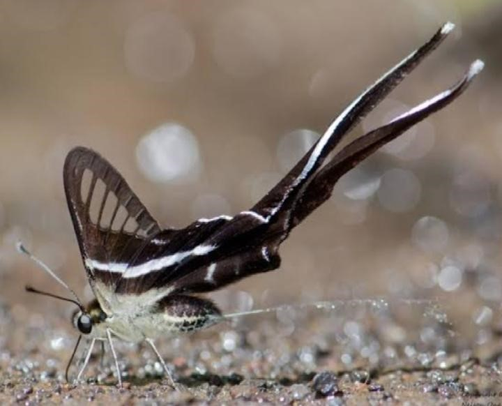

Mariposa cola de dragón.
Es una especie pequeña, de entre 4 y 5.5 centímetros (1.6 to 2.2 in) de envergadura. Esta especie
pose un esquema básico de color blanco y negro. Posee una larguísima cola con punta blanca, casi tan
grande como el resto de las alas de 25 a 40 milímetros (0.98 to 1.57 in). Las alas frontales son
translúcidas, parecidas al vidrio destacando en ellas su venación como delgadas líneas negras con un
borde negro. También tiene una banda blanca que atraviesa las cuatro alas (lo que la distingue de
Lamproptera curius la otra especie del género). Esta banda continúa sobre el ala trasera negra que
lleva la cola larga y el pliegue abdominal prominente. En esta especie las bandas son de un color verde
pálido, mientras que en la especie más estrechamente relacionada Lamproptera curius son blancas. Los
machos y hembras son muy parecidos, pero la hembra es más opaca y tiene un surco de cópula ventral antes
de la punta del abdomen. Los machos de esta especie no tienen la marca sexual (órgano aromático) presente
en Lamproptera curius.
Ciclo de vida:
Los huevos de la mariposa son de un color verde pálido, esféricos y translúcidos. De ellos emerge
una oruga de color verde oscuro con puntos negros que se alimenta de la planta Illigera burmanica King
(familia Hernandiaceae). En Filipinas, la mariposa también se ha registrado en especies de Zanthoxylum
(Rutaceae).
Habitad:
Habita en bosques de India, sur de China, Malasia, parte de Indonesia y Filipinas.
Características:
- Son de color blanco y negro (hembras no tienen mucha diferencia).
- Sus alas tienen unas tiras alargadas al final de cada una haciendo ilucion como si hubiese
una cola o listones en las alas.
- Miden entre 4 y 5 CM de envergadura, pero llegan a medir entre 7 y 8 también.
- Son polinizadoras como la mayoría de las mariposas.
- Son de la familia rapiloide.
